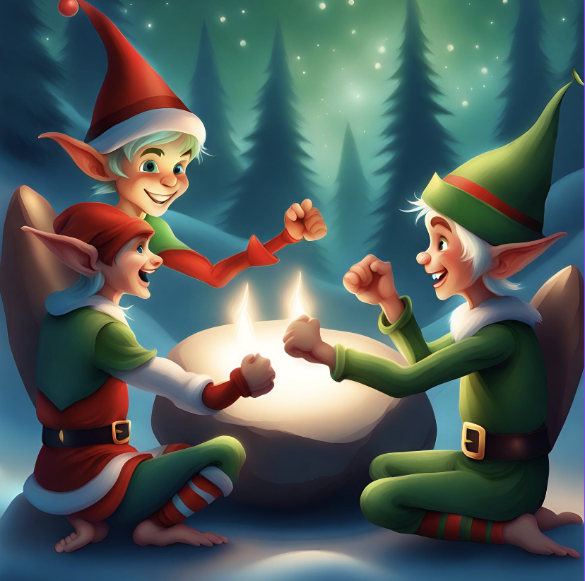

[,1] [,2]
[1,] "A" "Y"
[2,] "B" "X"
[3,] "C" "Z" Advent of Code
Health Data Science
Advent of Code
Sean discusses the popular and festive-themed annual coding challenge Advent of Code
Sean is currently studying in the Master’s of Health Data Science, completing his dissertation in 2024. Outside of study, he enjoys skiing and hiking and also chasing after his daughter
What is it?
Advent of Code (AOC) is an annual event in the coding community, signalling the arrival of the Christmas season with coding challenges that test your skills as a coder with a touch of humour thrown in. The AOC was created by Eric Wastl and consists of challenges released daily from December 1st to December 25th. These challenges cover topics such as algorithms, data structures, mathematics, and more, many of which you may encounter at a Data Scientist.
The tasks are designed to be approachable yet stimulating, making them suitable for coders of various skill levels. Early challenges can be as simple as adding groups of numbers together whilst later challenges often require algorithms where brute force techniques are not possible. Each person is also given a unique dataset to work with, so everyone’s solution is unique. Part 2 each day is often a twist in the problem that either can be fixed with a small change in code, or perhaps lead to an hour(s) of frustration.
Why Participate?
Skill Enhancement The challenges crafted to encourage problem-solving and critical thinking, helping enhance coding skills. Especially true for unstructured data. Often a key challenge each day is to convert the raw data into a workable format from which a solution can be found.
Festive Spirit The challenges are infused with a holiday theme, adding a touch of humour to the coding experience.
Debugging Practice Use of the smaller test data within the problem statement is a useful way to test code without having to analyse the whole data set. Breaking the problem into a smaller size and catching errors before running on the full dataset saves time and can be updated more quickly.
An example from last year
Let’s take a look at a sample challenge from Day 2 of Advent of Code 2022. Here is a synopsis of the puzzle:
A hypothetical game of Rock, Paper, Scissors is set up by the elves, with a unique scoring system. The winner of the whole tournament is the player with the highest score. Your total score is the sum of your scores for each round. The score for a single round is the score for the shape you selected (1 for Rock, 2 for Paper, and 3 for Scissors) plus the score for the outcome of the round (0 if you lost, 3 if the round was a draw, and 6 if you won). After a number of rounds, using a predetermined strategy, the final score needs to be calculated.

Every user is provided with their own input to the puzzle, a text file with 2,500 letter pairs. The first column is what your opponent plays: A for Rock, B for Paper, and C for Scissors. The second column is what you play in response: X for Rock, Y for Paper, and Z for Scissors.
The input dataset is a pair of columns representing your oponents moves and your moves. The first three rows might look as below.
This example would be scored as follows:
- In the first game, your opponent chooses Rock (A) and you choose Paper (Y). This would be scored as a total of 8, 2 for using paper and 6 because you won.
- In the second game, your opponent chooses Paper (B) and you choose Rock (X). This results in a loss for you and a total score of 1 (1 + 0).
- In the third game, you and your opponent both choose Scissors, ending in a draw and a scored 6 (3+3).
Based on the first three rows the final score would be 15 (8+1+6). The challenge is to write code to calculate your total score based on the 2,500 rows in your unique input file.
A solution
To solve this using Python we can set up a dictionary of moves and scores which consists of {key: value} pairs. For example ('A', 'Y'): 8 is the scenario where Rock (A) plays Paper (Y), so looking up the key (‘A’, ‘Y’) points to the score 8. By looping though the list of games and accessing the value at each key, the final score can be calculated.
Below is my complete solution for Part 1 of this challenge
# Day 2 Advent of code
#read in the puzzle input
main = [l.strip().split(' ') for l in open('input.txt')]
#read in the demo input
test = [l.strip().split(' ') for l in open('test.txt')]
#point to the test or full dataset
use = main
# part 1 look up values for the moves, store in a dictionary
move = {('A', 'X'): 4, ('A', 'Y'): 8, ('A', 'Z'): 3,
('B', 'X'): 1, ('B', 'Y'): 5, ('B', 'Z'): 9,
('C', 'X'): 7, ('C', 'Y'): 2, ('C', 'Z'): 6}
#play though the moves one by one, sum and then print final score
t = 0
for elf, me in use:
t = t + move[(elf, me)]
print(t)Steps to Solve the Problem
Reading Input The code reads input from a file (input.txt in this example) to simulate real-world scenarios where input data is often provided externally.
#read in the puzzle input
main = [l.strip().split(' ') for l in open('\\aoc\\input.txt')]The Python functions strip() and split() are used to strip away white space and split the data into pairs of moves and store in a list.
Setting up the dictionary This part of the code sets up the dictionary of {key:value} pairs for the moves and scores.
# part 1 look up values for the moves, store in a dictionary
move = {('A', 'X'): 4, ('A', 'Y'): 8, ('A', 'Z'): 3,
('B', 'X'): 1, ('B', 'Y'): 5, ('B', 'Z'): 9,
('C', 'X'): 7, ('C', 'Y'): 2, ('C', 'Z'): 6}There are only nine possible combinations so it is easy to work this out in advance.
Looping through the input This is where you loop through each line of the input text file and use the dictionary to calculate the result of each round.
#play though the moves one by one, sum and then print final score
t = 0
for elf, me in use:
t = t + move[(elf, me)]
print(t)An advantage of a for loop in python is that the method will iterate through an entire list without having to define the length beforehand.
Final thoughts
The Advent of Code is not just a coding challenge, it’s a fun way to test your skills and often be amazed that each day competitive coders from around the solve the problems in a matter of minutes. Whether you’re just starting to code, or experienced, participating is a great way to embrace the festive spirit while practicing your skills.
Taking part
To take part in Advent of Code 2023 the first step is to sign up at adventofcode.com/2023/auth/login. To join the CBDRH leaderboard go to adventofcode.com/2023/leaderboard/private and enter the code 2314975-9001d5ff. Happy coding!